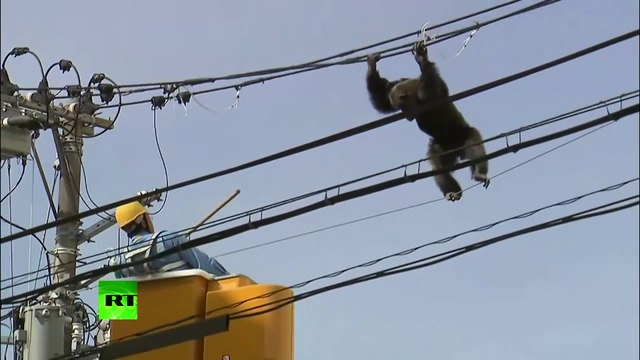

THE real question is how?
Accoridng to the security agents:
The monkeys waited for the zoo to close and the cages to be checked, hiden in attacke him and steal his keys
Following this attack, the monkeyswould have rescued the animals froom the ZOO.

Photography taken by Peter Parker